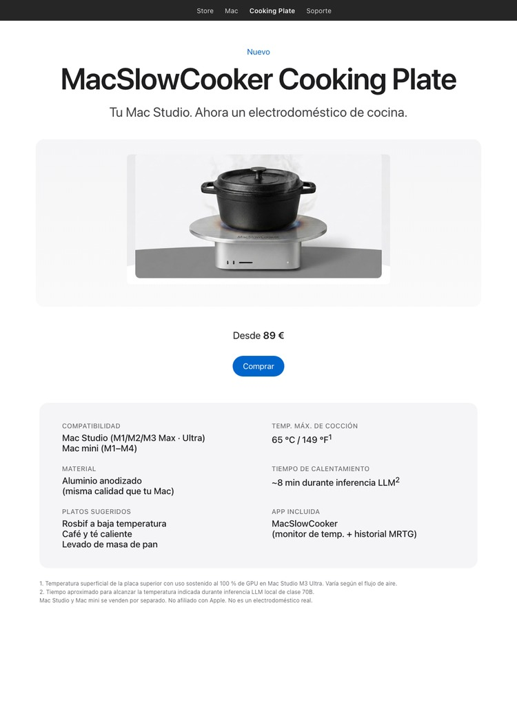
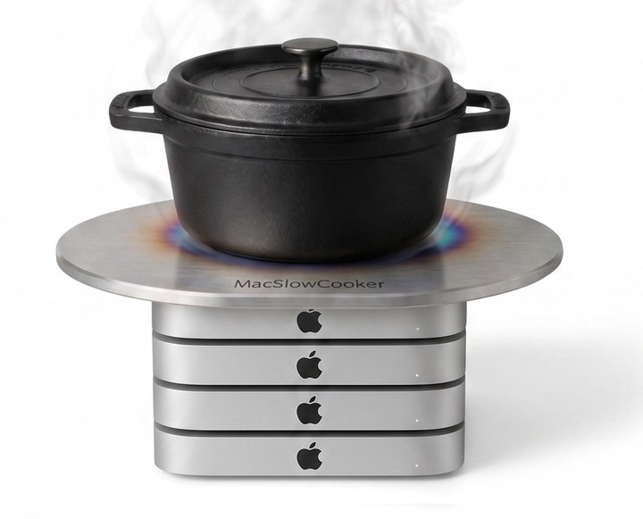

Tu Mac Studio. Ahora un electrodoméstico de cocina.


Edición Cluster — para el rack de entrenamiento de LLM. Cuatro Mac minis, una placa. Misma parodia, cuatro veces más BTU.
Durante el desarrollo de MacSlowCooker — una app real de macOS que visualiza el uso de GPU en el Dock como una olla — ejecutar inferencia LLM local en un Mac Studio M3 Ultra calentaba el chasis lo suficiente como para que la broma "¿podrías cocinar encima de esto en serio?" volviera una y otra vez.
Así que esta página concepto existe. Enmarca el calor de un Mac trabajando duro como si fuera una característica de cocina. Los números son reales, el producto no.
Apoyar utensilios calientes, líquidos o cualquier cosa sensible al calor sobre una computadora activa es mala idea. La placa superior del Mac Studio es de aluminio pero el flujo de aire es crítico para mantener el SoC bajo los límites térmicos. Bloquearlo acorta la vida útil de la máquina y puede invalidar la garantía.